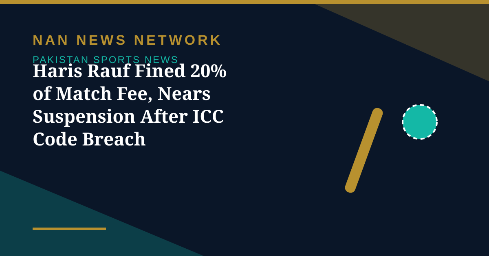

Haris Rauf Fined 20% of Match Fee, Nears Suspension After ICC Code Breach

Pakistan fast bowler Haris Rauf has been fined 20% of his match fee and issued an official reprimand for breaching the ICC code of conduct during his team's one-wicket victory over England in the ODI tri-series, the International Cricket Council said on Wednesday. Rauf also received one demerit point, his third offence within 24 months, taking his total to five points and moving him closer to a suspension.
What happened in the 46th over
The incident occurred during the 46th over of Pakistan's run chase when Rauf, standing at the non-striker's end, appealed for a wide and then exchanged words with England all-rounder Will Jacks. According to the ICC, Rauf breached Article 2.2, covering conduct contrary to the spirit of the game: he raised his bat and continued the argument despite warnings from umpire Sharfuddoula Ibne Shahid, and brushed past the umpire while walking towards Jacks.
England were also sanctioned, fined 15% of their match fee for maintaining a bowling rate three overs below the required target; captain Harry Brook accepted the offence, so no formal hearing was required. The match itself produced a dramatic finish: England posted 242, Pakistan slumped to 154 for 9, and Shadab Khan's unbeaten 113, shared in an 89-run last-wicket partnership with Rauf, stunned the visitors. The disciplinary action is now an unwelcome subplot ahead of Saturday's final.
Sources: The Business Standard, ABP Live, October 28, 2026
More on Pakistan Sports News
- Sri Lanka Crush Pakistan by Eight Wickets to Reach Tri-Series Final
- Pakistan Begin Hong Kong Sixes Title Defence Under Abbas Afridi
- Malaysia Edge Pakistan on Penalties to Win Sultan of Johor Cup
- Saim Ayub Released from ODI Squad as Sahibzada Farhan Named Replacement
- Egyptians Sweep Both Titles at Karachi Venus Squash Open
- Shadab Khan's Unbeaten 113 Lifts Pakistan Past England in One-Wicket Tri-Series Thriller
- Babar Azam to Lead New-Look Pakistan Test Squad Against Sri Lanka
- Pakistan's Pink Day: Green Shirts Wear Pink Against England for Breast Cancer Awareness